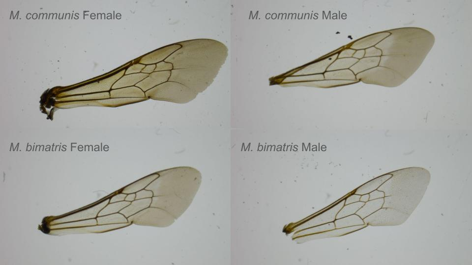

include=FALSE
bees2019 = read_tsv("C:\\Users\\kaion\\OneDrive\\Desktop\\DATA 510\\OBA2019.txt")
melissodes19 = bees2019 %>% filter(str_detect(acceptedScientificName, "Melissodes"))
bees2018 = read_tsv("C:\\Users\\kaion\\OneDrive\\Desktop\\DATA 510\\OBA2018.txt")
melissodes18 = bees2018 %>% filter(str_detect(acceptedScientificName, "Melissodes"))
bees = melissodes19%>%select(acceptedScientificName, decimalLatitude,decimalLongitude)
bees = bees%>%st_as_sf(coords = c("decimalLongitude", "decimalLatitude"), crs = 4326)
plants = aster %>%select(scientific_name,lat,lon)
plants = plants%>%st_as_sf(coords = c("lon", "lat"), crs = 4326)Capstone Rough Draft
Introduction
Pollinators play a vital role in maintaining healthy ecosystems and ensuring plant reproduction. However, the phrase “Save the Bees” has shifted the focus of pollinator protection towards non-native European honeybees, which are often irresponsibly farmed or escape and start feral populations. In fact, the most urgent pollinators to research and protect are the native bees that have existed in local ecosystems and specifically adapted to pollinate native flowers, long before anthropocentric intervention and disruption.
Among these native bees, Melissodes bees (commonly known as summer long-horned bees) are key specialists in pollinating plants of the Aster family, which includes many plants that are native to Oregon like the Common Sunflower (Helianthus annuus) and plants that are endemic to the Pacific Northwest like the Columbia River Daisy (Columbiadoria hallii) & the Puget Sound Gumweed (Grindelia integrifolia).
Background
There is a deep importance to study species that have co-evolved with native plants and ecosystems for thousands of years. However, studying these bees presents challenges, particularly when it comes to correctly identifying species. Traditionally, scientists have relied on morphological identification, which is sorting similar bees by physical features like the color or shape of different anatomy. More recently, genetic (phylogenetic) identification has provided a new way to classify species. These two methods work in a feedback loop: physical descriptions help guide genetic research, while DNA analysis can reveal errors or hidden diversity in older classification systems. Despite overall advancements in the field of science, research on Melissodes bees has lagged in some regions. Even though the West Coast (including Oregon) has more Melissodes species than the East Coast, fewer studies have been conducted here, leaving gaps in our knowledge.
This project seeks to make Melissodes research faster and more accessible by evaluating different identification methods and creating new tools. A major obstacle has been the outdated LaBerge Key to Eumelissodes (1961), the primary guide for identifying these bees. To modernize this process, we developed Bee-Search, which is an R Shiny app to simplify species identification and provide an a straightforward and accessible user interface.
As we collect and analyze these data, we are ensuring that specimen collection and genetic research follow best practices for conservation and scientific integrity. By improving these foundational research steps, we hope to support better conservation strategies for Oregon’s native pollinators.
Methodology
Data Engineering
This project has benefitted tremendously from our lab’s prior affiliation with the Oregon Bee Atlas, a project based at Oregon State University in Corvallis that aims to describe the diversity of all bees across the state. Collection efforts for this project began in earnest in 2018, and our lab has access to all of their records for Melissodes specimens from 2018-2020. This covers about 1700 individual bees, and includes information such as the collector, the time, date, and location of the collection event, and the type of plant that bee was gathering pollen or nectar from. Given the aforementioned difficulty of identification, only a small fraction of these bees are identified to the species level.
Using host plant data from the OBA, we compiled a list of known Melissodes hosts. Then, with the export tool on the community science website iNaturalist, we extracted a dataset of nearly 100,000 sightings of these plants across the state of Oregon. This contains information such as time and date, latitude and longitude, and whether the plant was wild or cultivated. We are also using the iNaturalist API to retrieve new sightings as they are uploaded, which should allow us to gain a solid understanding of the distribution of these plants throughout the state, and in turn, the distribution of the bees that rely on them. Additionally, there are several species, such as M. rivalis and M. clarkiae, which rely completely on one type of plant (thistles and clarkias, respectively). While this data could prove particularly useful to target specialist pollinators like these, it could also be used to find areas with high densities of relevant flowering plants anywhere in the state. Our OBA survey dataset and our iNaturalist observations are both hosted on a postgres database with Railway.
Data Organization
The Lindh Lab has done quite a bit of research on Melissodes in prior years, and thanks to the Oregon Bee Atlas, we have well over 1,000 specimens available for morphological, genetic, and spatial analyses of all kinds. However, the nature of all these disparate inquiries means there are countless different ways to sort our physical specimens, and even the ones that have been processed in some way are prone to being moved around haphazardly. To address all of the chaos, we are creating a centralized specimen tracking system based on the unique accession numbers assigned to each specimen by the Oregon Bee Atlas. By using these accession numbers as primary keys, we should be able to join specimen metadata (sex, species IDs, and collection events), morphological characteristics (especially facial patterns), results from genetic sequencing, and photographs. This standardization will streamline future work by uniting our disparate datasets. Additionally, by restructuring old datasets to conform to this new system, we will be able to minimize data loss and redundancy in the Lindh lab’s future efforts.
Targeting Species with Known Host Plant Associations
Using the lubridate package in R, the bee specimen and associated host plant data were wrangled from the observation coordinates, which were organized into polygons. Now the datasets could be joined, allowing for analysis of overlapping plants & pollinators. Once the data can be compared, a two-way ANOVA test can be administered to assess interaction effect based on the distances between different species of bees and plants.
Wing Vein Geometric Morphometrics
We pulled the forewings of over 70 specimens and mounted them on microscope slides to take clear photos of the patterns in the veins. Wing venation is a sort of superficial characteristic that is seemingly not affected by natural selection, so any changes that occur in populations would probably be very gradual. Theoretically, this means you could expect closely related bees to exhibit very similar venation patterns to one another.
Unfortunately, like nearly every other morphological characteristic we use for identification, sexual dimorphism is a major confounding factor. In other words, a male bee usually looks more like male bees of a different species than it does to female bees of its own species. This principle even applies to the shape of the bee wings and the cells inside them, so we’ll need to divide our image data into male and female subsets. At the end of the process, we can try to reunite them with phylogenetic clustering.
 To analyze the patterns of wing venation, we manually placed landmarks at specific points on each wing. This let us create sets of coordinates which describe the layout of veins and cells. Using the digitizeImages function from the StereoMorph package, we were able to save these landmarks as shapes, which allows us to calculate how the position of each point differs throughout our set of wing images.
These insects are very small and fragile, especially after sitting for years in room-temperature cardboard boxes. We did unfortunately damage a few specimens in the process of pulling wings. Some were torn, and some got folded over beneath the cover slip. Using the backlog of complete wings, however, we were able to estimate the geometry of any missing points and fill them in.
Finally, we are able to statistically compare the shapes of the wings. Using a type of statistical shape analysis called a Procrustes fit, we were able to calculate the scaling, transposition, and rotation parameters that results in the optimal superimposition between any two shapes. This creates a normalized series of coordinate data that will highlight the differences between individual bees.
Using the standardized coordinates, we can perform a PCA to see if any obvious clusters of closely related bees emerge. We can plot the resulting principal components, and compare our results with the preliminary species IDs we already have for each specimen. We can do this with the geomorph package, which contains a new type of object specifically designed for geometric morphometrics. This allows us to handle landmark coordinates, centroid areas, and categorical variables such as those species IDs.
Results
Host Plants (Asteraceae Family)
Interpretation of ANOVA Results
library(sf)
library(lubridate)
nearest_plant = st_nearest_feature(bees, plants)
bees_n_plants = bees %>% mutate(nearest_plant_index = nearest_plant,plant_species = plants$scientific_name[nearest_plant])
bees_n_plants$distance_to_plant = st_distance(bees, plants[nearest_plant, ],by_element = TRUE)
aov(distance_to_plant ~ acceptedScientificName, data = bees_n_plants) %>% summary()The goal of the ANOVA model is to test whether the mean distance to the nearest plant differs significantly among Melissodes bee species (acceptedScientificName). The test yielded a statistically significant overall effect (F(10, 744) = 3.375, p= 0.0003), indicating that certain Melissodes species forage at different mean distances from their nearest host plants. While the effect size was modest (η² = 0.043), this suggests that are species-specific foraging behaviors—potentially driven by floral preference or habitat specialization—influence spatial associations with Asteraceae. These findings underscore the importance of targeted collection strategies: by prioritizing areas where aster observations are dense (e.g., via iNaturalist data), researchers can optimize efforts to capture Melissodes bees during their active foraging periods.
To further assist host-plant based research design, the AsterObs Shiny app was created (available here: Asteraceae Observations in Oregon (iNaturalist 2018-2025). This app addresses a critical bottleneck in native bee research by spatially linking previous Melissodes collection efforts to iNaturalist observations of their Asteraceae host plants. The visualization of Aster family observations is able to be filtered by both year and genus, reducing search time and improving the likelihood of capturing target species of these specialist bees in their native habitats.
Future statistical findings: relationship between specific species
Wing Vein Geometric Morphometrics
Sample Results
#Effect sizes (Z) based on F distributions
#
# Df SS MS Rsq F Z Pr(>F)
#species 5 0.036598 0.0073196 0.12746 1.8991 1.7647 0.041 *
#Residuals 65 0.250526 0.0038542 0.87254
#Total 70 0.287124
#---
#Signif. codes: 0 ‘***’ 0.001 ‘**’ 0.01 ‘*’ 0.05 ‘.’ 0.1 ‘ ’ 1
# cross-validated classification results in frequencies
#
# 10 23 29 70 72 77
# 10 27 1 7 4 6 3
# 23 1 1 0 0 1 0
# 29 4 0 1 0 0 0
# 70 2 0 0 1 0 0
# 72 3 0 0 0 7 0
# 77 1 0 1 0 0 0
# cross-validated classification result in %
#
# 10 23 29 70 72 77
# 10 56.2500 2.0833 14.5833 8.3333 12.5000 6.2500
# 23 33.3333 33.3333 0.0000 0.0000 33.3333 0.0000
# 29 80.0000 0.0000 20.0000 0.0000 0.0000 0.0000
# 70 66.6667 0.0000 0.0000 33.3333 0.0000 0.0000
# 72 30.0000 0.0000 0.0000 0.0000 70.0000 0.0000
# 77 50.0000 0.0000 50.0000 0.0000 0.0000 0.0000
# overall classification accuracy: 52.11268 %
#
# Kappa statistic: 0.19667Conclusions
If the multiple unrelated and often conflicting identification methods didn’t already make this clear, the diversity of life on Earth is much more complex than the classification systems we impose are fully capable of capturing. We attempted to unify the results of these different techniques on our specimens with a centralized database, and by populating it with our lab’s backlog of data, plus the occasional simplification of old tools we’ve made, we hope to leave the Lindh lab better than we found it.
While we weren’t able to completely solve the daunting challenge these insects have presented to scientists for over a hundred years, perhaps we made studying them a little easier for one scientist.